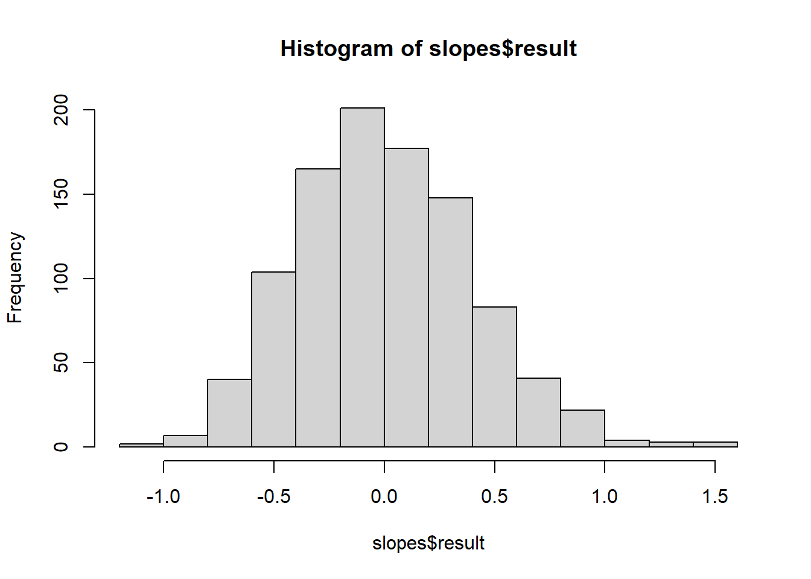

For this exercise I will be doing a simple linear regression examining how brain sizes (ECV) of different primate taxa varies as a function of group size
Step 1: Libraries and Data
First I will get the data loaded in an do some initial analysis using the skim() function in the {skimr} package to generate the median, minimum, maximum, 1st and 3rd quartile values, mean, and standard deviation for each variable.
Next I will produce plots which plot brain size (ECV) as a function of group size, longevity, juvenile period length, and reproductive lifespan. I used the {cowplot} package to arrange these 4 plots in a grid
Now I will calculate the Beta 1 and Beta 0 (least squares regression coefficiants) for ECV (brain size) as a function of social group size. Since there are NA values in the data set, I filtered out any NAs in both ECV and Group_size before calculating the coefficients.
#Cleaning data to remove NA values from variables of interestd <- d |>filter(!is.na(ECV) &!is.na(Group_size))ECV_sd <-sd(d$ECV) #YGS_sd <-sd(d$Group_size) #Xb1 <-cor(d$Group_size, d$ECV) * (ECV_sd/GS_sd)b0 <-mean(d$ECV) - (b1*mean(d$Group_size))print(paste("Beta 1 =",b1, "; Beta 0 =",b0))
Now I will again measure the regression coefficients but this time I will do them based on each of the three radiations of primates. To do this by hand, I first created a function called regCof() which will take the data set, name of the radiation, and the x and y values the user want to run a regression on as arguments. The function will then calculate the Beta 1 and Beta 0 coefficients. To confirm these results, the filtLM() function I created will take the same agreements and apply the lm() function to the filtered data set.
All three groups of primates have different values for both of the regression coefficients, with platyrrhines as having the highest Beta 1 value and catarrhines having the highest Beta 0 value. All of them however have positive coefficients with slope being greater than 1, suggesting a similar positive relationship between brain size and group size across all three primate radiations.
#Calc b1 and b0 on filtered dataset by radiationregCof <-function(df, rad, x, y){ group <- df |>filter(Taxonomic_group == rad) sdX <-sd(group[[x]]) sdY <-sd(group[[y]]) b1 <-cor(group[[x]], group[[y]], use ="complete.obs") * (sdY/sdX) b0 <-mean(group[[y]]) - (b1*mean(group[[x]]))return(c(b1, b0))}#Use lm() on a filtered data setfiltLM <-function(df, rad, x, y){ group <- df |>filter(Taxonomic_group == rad) ECVlm <-lm(group[[y]] ~ group[[x]])return(ECVlm)}cattys <-regCof(d, "Catarrhini", "Group_size", "ECV")cattysLM <-filtLM(d, "Catarrhini", "Group_size", "ECV")print(paste("Catarrhini Beta 1:", cattys[1], "and Beta 0:", cattys[2], "by hand"))
[1] "Catarrhini Beta 1: 1.14632208171202 and Beta 0: 83.4205915885222 by hand"
Now, I will use my first slope coefficient (Beta 1) based off the first regression of brain size and group size to calculate the standard error, 95% confidence intervals, and p-value associated with the coefficient.
In order to calculate the standard error, I first need to determine the sum of squares of X (SSX) and mean of remaining variance (MSE). SSX is calculated by taking the sum of the values for out X value in the model section of the linear model minus the mean of this value squared. To calculate the MSE, we need to divide the squared sum of the residuales by the number of degrees of freedom for the error sum of squares. Once we have the MSE and SSX we divide them and take the square root of that to determine the standard error of the slope coefficient
For the 95% confidence intervals we add the slope coefficient to a qt() function based on the size of the confidence interval and out degrees of freedom and multiplied by the standard error we calculated.
Finally, for the p-value, we first calculate the t-statistics (slope coefficient/standard error) and then plugging it into the pt() function which we then multiply by 2. As a final step, I used the summary() function on my linear model to check my work for the standard error and p-value and the confint() function on the linear model to make sure I calculated the confidence intervals correctly.
#Step 6.1: Calculate MSE and SSXSSE <-sum(ECVlm$residuals^2)SSX <-sum((ECVlm$model$Group_size -mean(ECVlm$model$Group_size))^2)df_error <-nrow(d) -2MSE <- SSE/df_error#Step 6.2: Calc SE of b1SEb1 <-sqrt(MSE/SSX)print(paste("Slope coefficient standard error by hand:", SEb1))
[1] "Slope coefficient standard error by hand: 0.350806075068323"
#Step 6.3: 95% CI for b1CIb1 <- b1 +qt(p=c(0.025, 0.975), ncp=0, df=150)*SEb1print(paste("Upper and lower 95% confidence intervals for slope coefficient by hand:", CIb1[1], CIb1[2]))
[1] "Upper and lower 95% confidence intervals for slope coefficient by hand: 1.7699117466465 3.15623093432333"
#Step 6.4: p-value of b1, need t_stat (t = estimate/SE) to calc#p-value (p = 2*pt(t, df = nrow - 2))tB1 <- b1/SEb1pB1 <-2*pt(tB1, df =149, lower.tail =FALSE)print(paste("p-value for slope coefficient by hand:", pB1))
[1] "p-value for slope coefficient by hand: 7.25943489958262e-11"
#Step 6.4: Compare results to those of the lm() functionsummary(ECVlm)
Call:
lm(formula = ECV ~ Group_size, data = d)
Residuals:
Min 1Q Median 3Q Max
-92.05 -29.25 -15.14 13.07 445.28
Coefficients:
Estimate Std. Error t value Pr(>|t|)
(Intercept) 30.3565 6.7963 4.467 1.56e-05 ***
Group_size 2.4631 0.3508 7.021 7.26e-11 ***
---
Signif. codes: 0 '***' 0.001 '**' 0.01 '*' 0.05 '.' 0.1 ' ' 1
Residual standard error: 60.31 on 149 degrees of freedom
Multiple R-squared: 0.2486, Adjusted R-squared: 0.2436
F-statistic: 49.3 on 1 and 149 DF, p-value: 7.259e-11
Now we will use a for{} loop to run 1000 permutations generate a null sampling distribution for the slope coefficient. We need to permute the group size variable because we want to break any associated it have with brain size. In the loop, we will create a temporary data frame based on the original to ensure the integrity of the data. The we will sample the temporary data for brain size and use this sample to run an ordinary least squares regression and save the slope coefficient in a vector called slopes.
After the permutation, we will calculate the p-value. The original p-value was 7.26e-11 based on the lm() function, which is significant because it is less than 0.001. We will calculate the p-value by hand using our permuted data via the theory-based method. When I ran this, I got a p-value of 2.97e-8 which is still a significant result well below 0.001
library(mosaic)library(broom)reps <-1000slopes <-do(reps) * { d_new <- d d_new$Group_size <-sample(d_new$Group_size) m <-lm(data = d_new, ECV ~ Group_size)tidy(m) |>filter(term =="Group_size") |>pull(estimate)}hist(slopes$result)

permSE <-sd(slopes$result)#Now we estimate the p value using the theory based method#This method requires the standard error of our null sampling distribution (standard#deviation), slopes_sd <-sd(slopes$result)slopes_mean <-mean(slopes$result)t <- (slopes_mean - b1)/slopes_sdp_upper <-1-pt(abs(t), df =150) #doing upper and lower p_lower <-pt(-1*abs(t), df =150)p <- p_upper + p_lowerprint(paste("p-value calulcated by hand useing theory-based method:", p)) #Slightly larger but still significant p-value
[1] "p-value calulcated by hand useing theory-based method: 5.52341420050663e-09"
summary(ECVlm)
Call:
lm(formula = ECV ~ Group_size, data = d)
Residuals:
Min 1Q Median 3Q Max
-92.05 -29.25 -15.14 13.07 445.28
Coefficients:
Estimate Std. Error t value Pr(>|t|)
(Intercept) 30.3565 6.7963 4.467 1.56e-05 ***
Group_size 2.4631 0.3508 7.021 7.26e-11 ***
---
Signif. codes: 0 '***' 0.001 '**' 0.01 '*' 0.05 '.' 0.1 ' ' 1
Residual standard error: 60.31 on 149 degrees of freedom
Multiple R-squared: 0.2486, Adjusted R-squared: 0.2436
F-statistic: 49.3 on 1 and 149 DF, p-value: 7.259e-11
Step 8: CI by Bootstraping
Finally, we will use the bootstrapping method to calculate the upper and lower 95% confidence intervals of our model. After running the bootstrap using the do() function from {mosaic} we will calculate the confidence intervals by using the quantile method and theory based method. The CI’s from both these methods indicate that the slope coefficient is different from 0 because both the lower and upper CI are positive and do not intersect with 0
nb <-1000b <-do(nb) * { b_new <- d bs <-slice_sample(b_new, n = nb, replace =TRUE) bm <-lm(ECV ~ Group_size, data = bs)tidy(bm) |>filter(term =="Group_size") |>pull(estimate)}#CI by quantileci <-quantile(b$result, probs =c(0.025, 0.975))print(paste("Upper and lower 95% confidence interval using quantile method:", ci[1], ci[2]))
[1] "Upper and lower 95% confidence interval using quantile method: 2.099907854358 2.77423414070642"
#CI by theory based methodpercent_ci <-95alpha <-1- percent_ci/100bootMean <-mean(b$result)bootSE <-sd(b$result)lowerCI <- bootMean +qnorm(alpha/2)*bootSEupperCI <- bootMean +qnorm(1- alpha/2)*bootSEciTheory <-c(lowerCI, upperCI)print(paste("Upper and lower 95% confidence interval using theoiry based method:", ciTheory[1], ciTheory[2]))
[1] "Upper and lower 95% confidence interval using theoiry based method: 2.11243156801904 2.79935333069585"